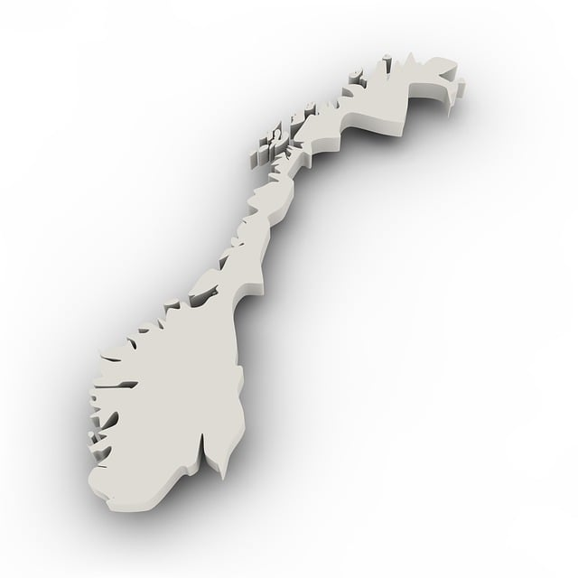
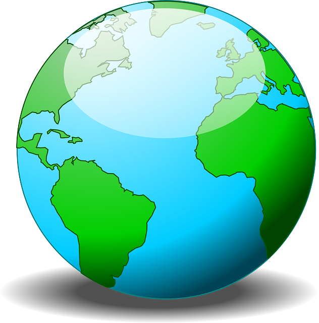

Vår 2024 - Resultater: Alle deltakere
Aktivitetsaksjonen er nå i gang. Den varer fra 15. april til 9. juni. Resultatsiden oppdateres 4 ganger i døgnet (kl 09, 11, 18 og 00).
Informasjon om aktivitetskampanjen. For å delta må du bli medlem i Helsedirektoratets klubb på Strava.
Aggregerte data
| 👥 76 kolleger | 🏁 2144 aktiviteter | ⏳ 1835:07 (t:m) | |||
| 📏 21674 km | 🧗 293216 høydemeter | 🌱 4768 kg CO2 spart | |||
|  9.4 x Lindesnes - Nordkapp |  0.5 x rundt jorden | ||||
Ukens resultater (uke 20)
| Navn | Aktiviteter | Varighet (t:m) | Distanse (km) | Høydemeter |
|---|---|---|---|---|
| 🔺 Even Espelid | 4 | 07:41 🎫🎫 | 224.5 | 1842 |
| 🔻 Kathrine Syse | 7 | 06:47 🎫🎫 | 45.7 | 359 |
| 🔥 Annebeth Askevold | 4 | 06:01 🎫🎫 | 148.5 | 1585 |
| 🔥 Bjørn Intelhus | 5 | 05:36 🎫🎫 | 154.9 | 1644 |
| 🔥 Sara Jovic | 5 | 04:17 🎫 | 53.7 | 726 |
| 🔥 Knut Jønsrud | 5 | 03:54 🎫 | 90.1 | 994 |
| 🔻 Henriette Øien | 12 | 03:53 🎫 | 32.4 | 380 |
| 🔻 Anita Lorck | 5 | 03:49 🎫 | 5.6 | 134 |
| 🔻 Thomas Rosenlund | 5 | 03:39 🎫 | 62.4 | 617 |
| 🔥 Caroline Høgsnes | 6 | 03:37 🎫 | 10.9 | 242 |
| 🔥 Per Ludvig Skjerven | 2 | 03:25 🎫 | 0.0 | 112 |
| 🔥 Bjarte Aksnes | 6 | 03:25 🎫 | 17.4 | 172 |
| 🔥 Guro Smedshaug | 5 | 03:21 🎫 | 55.5 | 641 |
| 🔥 Hans Christian Sundsfjord | 5 | 03:14 🎫 | 65.8 | 836 |
| 🔻 Øivind Langeland | 8 | 03:14 🎫 | 69.7 | 633 |
| 🔥 Maren Jeanette | 6 | 02:54 🎫 | 17.4 | 211 |
| 🔥 Kirsti Strand | 7 | 02:54 🎫 | 27.8 | 458 |
| 🔻 Unni Helgesen | 4 | 02:49 🎫 | 28.4 | 149 |
| 🔥 Øyvin Jakobsen | 5 | 02:39 🎫 | 60.3 | 744 |
| 🔻 Jeppe Ugland | 3 | 02:31 🎫 | 21.7 | 288 |
| 🔥 Linda Haugen | 5 | 02:30 🎫 | 7.6 | 68 |
| 🔥 Jostein Ven | 4 | 02:26 | 48.2 | 607 |
| 🔺 Birgit Johansen | 4 | 02:24 | 17.7 | 240 |
| 🔻 Monica Sørensen | 3 | 02:23 | 6.3 | 0 |
| 🔥 Addi K | 3 | 02:06 | 25.4 | 279 |
| 🔻 Vegard Nore | 5 | 02:04 | 40.2 | 463 |
| 🔻 Asbjørn Steiro | 1 | 01:59 | 47.2 | 624 |
| 🔥 Steinar Mathisen | 2 | 01:52 | 17.6 | 299 |
| 🔻 Bjørn Jarle Wiger | 4 | 01:49 | 41.2 | 472 |
| 🔥 Heidi Amundsen | 3 | 01:43 | 7.2 | 112 |
| 🔥 Ragnhild Holst | 6 | 01:42 | 19.4 | 231 |
| 🔻 Eirik Riiser | 2 | 01:42 | 11.1 | 42 |
| 🔥 Erlend Bø | 2 | 01:36 | 43.8 | 395 |
| 🔥 Anna Naume Solem | 2 | 01:31 | 7.2 | 0 |
| 🔻 Jonas Bergan | 2 | 01:31 | 16.5 | 120 |
| 🔥 Sven Bruun | 2 | 01:27 | 7.4 | 45 |
| 🔻 Idunn Løvseth Kavlie | 1 | 01:27 | 11.4 | 308 |
| 🔻 Tea Elgshøen | 1 | 01:24 | 15.0 | 167 |
| 🔥 Siw Helene Myhrer | 2 | 01:22 | 34.0 | 307 |
| 🔥 Astrid Bjerkås | 2 | 01:15 | 24.6 | 271 |
| ⭐ Nikoline Ørstavik | 1 | 01:13 | 0.0 | 0 |
| 🔻 Jarle Hersvik | 1 | 01:13 | 3.8 | 44 |
| 🔻 Ingvar Sørlien | 1 | 01:09 | 12.6 | 149 |
| 🔻 Nina Wavik Ytterstad | 4 | 01:06 | 22.0 | 302 |
| 🔥 Helen Eriksen | 1 | 01:06 | 5.2 | 85 |
| 🔻 Linda Nisja | 1 | 01:03 | 0.0 | 0 |
| 🔻 Øystein Maurud Holm | 2 | 00:59 | 1.8 | 22 |
| 🔥 Nina Nina Bjørlykke | 3 | 00:53 | 18.9 | 225 |
| 🔻 Martha Hynne | 2 | 00:51 | 5.4 | 121 |
| 🔻 Sigrid Beitland | 1 | 00:41 | 7.7 | 60 |
| 🔻 Gunnhild Solli Haukaas | 1 | 00:38 | 6.7 | 41 |
| 🔥 Helene Normann | 1 | 00:32 | 4.6 | 83 |
| 🔻 Per-Christian Wandås | 1 | 00:22 | 0.0 | 0 |
| 🔥 Sigvor Melve | 1 | 00:20 | 3.3 | 54 |
| 🔻 Ingrid Pedersen | 1 | 00:10 | 1.9 | 29 |
Forrige ukes resultater (uke 19)
| Navn | Aktiviteter | Varighet (t:m) | Distanse (km) | Høydemeter |
|---|---|---|---|---|
| Kathrine Syse | 18 | 24:08 🎫🎫 | 153.1 | 1334 |
| Even Espelid | 9 | 17:15 🎫🎫 | 419.3 | 3594 |
| Henriette Øien | 36 | 16:02 🎫🎫 | 77.9 | 1400 |
| Thomas Rosenlund | 16 | 15:36 🎫🎫 | 342.4 | 4600 |
| Anita Lorck | 18 | 14:25 🎫🎫 | 31.3 | 553 |
| Øivind Langeland | 21 | 14:15 🎫🎫 | 277.9 | 2783 |
| Bjørn Intelhus | 8 | 12:23 🎫🎫 | 303.2 | 4826 |
| Per-Christian Wandås | 9 | 12:20 🎫🎫 | 62.3 | 1277 |
| Unni Helgesen | 10 | 11:56 🎫🎫 | 69.1 | 1220 |
| Sara Jovic | 22 | 11:32 🎫🎫 | 104.9 | 1427 |
| Ørjan Stene | 6 | 10:31 🎫🎫 | 222.7 | 2157 |
| Bjørn Jarle Wiger | 6 | 10:19 🎫🎫 | 240.4 | 2894 |
| Asbjørn Steiro | 4 | 09:49 🎫🎫 | 225.9 | 2527 |
| Vegard Nore | 17 | 09:32 🎫🎫 | 183.5 | 2400 |
| Monica Sørensen | 13 | 08:49 🎫🎫 | 59.1 | 0 |
| Kenneth Birkeli | 8 | 08:46 🎫🎫 | 55.5 | 888 |
| Jeppe Ugland | 7 | 08:24 🎫🎫 | 66.2 | 744 |
| Linda Nisja | 4 | 08:04 🎫🎫 | 153.4 | 1144 |
| Kirsti Strand | 11 | 07:50 🎫🎫 | 53.9 | 874 |
| Ingvar Sørlien | 6 | 07:47 🎫🎫 | 141.8 | 1256 |
| Maren Jeanette | 9 | 07:45 🎫🎫 | 30.6 | 593 |
| Tea Elgshøen | 6 | 07:36 🎫🎫 | 44.1 | 357 |
| Bjarte Aksnes | 14 | 07:13 🎫🎫 | 35.3 | 235 |
| Birgit Johansen | 11 | 07:08 🎫🎫 | 69.1 | 1401 |
| Caroline Høgsnes | 14 | 07:01 🎫🎫 | 27.2 | 412 |
| Linda Haugen | 15 | 06:45 🎫🎫 | 28.5 | 270 |
| Per Øivind Gaardsrud | 2 | 06:39 🎫🎫 | 146.5 | 1768 |
| Idunn Løvseth Kavlie | 5 | 06:17 🎫🎫 | 39.0 | 462 |
| Jonas Bergan | 6 | 06:16 🎫🎫 | 92.4 | 758 |
| Eirik Riiser | 4 | 06:14 🎫🎫 | 103.9 | 1547 |
| Addi K | 6 | 06:09 🎫🎫 | 77.0 | 894 |
| Jarle Hersvik | 7 | 06:03 🎫🎫 | 79.8 | 760 |
| Guro Smedshaug | 4 | 05:55 🎫🎫 | 89.7 | 302 |
| Steinar Mathisen | 7 | 05:22 🎫🎫 | 52.0 | 670 |
| Nina Wavik Ytterstad | 7 | 05:22 🎫🎫 | 99.7 | 1110 |
| Anna Naume Solem | 5 | 05:19 🎫🎫 | 41.2 | 933 |
| Annebeth Askevold | 7 | 05:18 🎫🎫 | 36.0 | 608 |
| Øystein Maurud Holm | 6 | 05:15 🎫🎫 | 28.7 | 647 |
| Sigrid Beitland | 5 | 05:02 🎫🎫 | 25.1 | 426 |
| Hans Christian Sundsfjord | 7 | 04:53 🎫 | 86.5 | 1050 |
| Martha Hynne | 11 | 04:43 🎫 | 30.8 | 795 |
| Heidi Amundsen | 7 | 04:42 🎫 | 20.9 | 317 |
| Erlend Bø | 6 | 04:28 🎫 | 98.3 | 804 |
| Vegard Storsul Opdahl | 3 | 03:45 🎫 | 0.0 | 0 |
| Ingrid Pedersen | 3 | 03:43 🎫 | 8.9 | 976 |
| Per Ludvig Skjerven | 4 | 03:42 🎫 | 60.9 | 848 |
| Gunnhild Solli Haukaas | 5 | 03:39 🎫 | 18.6 | 333 |
| Knut Jønsrud | 3 | 03:26 🎫 | 66.6 | 946 |
| Silja Angellsen | 3 | 03:16 🎫 | 22.9 | 554 |
| Kaja Fjell Jørgensen | 4 | 03:14 🎫 | 0.0 | 0 |
| Øyvin Jakobsen | 6 | 03:08 🎫 | 67.8 | 843 |
| Hanne Narbuvold | 3 | 03:07 🎫 | 10.2 | 48 |
| Nina Nina Bjørlykke | 3 | 03:00 🎫 | 26.7 | 338 |
| Sven Bruun | 5 | 02:58 🎫 | 22.5 | 180 |
| Thomas Grimeland | 5 | 02:13 | 21.5 | 282 |
| Jostein Ven | 2 | 02:08 | 10.4 | 94 |
| Vegard Kvilesjø | 1 | 02:04 | 21.5 | 262 |
| Yvonne Solberg | 2 | 02:00 | 0.0 | 0 |
| Vibeke Herikstad | 2 | 01:57 | 0.0 | 0 |
| Ragnhild Holst | 6 | 01:32 | 21.4 | 285 |
| Helene Normann | 3 | 01:25 | 9.0 | 125 |
| Siw Helene Myhrer | 1 | 01:25 | 6.7 | 144 |
| Sigvor Melve | 3 | 01:10 | 12.5 | 162 |
| Helen Eriksen | 4 | 01:01 | 7.5 | 114 |
| Astrid Bjerkås | 1 | 00:44 | 4.0 | 87 |
| Hege Wang | 1 | 00:35 | 3.9 | 167 |
| Marie Hagle | 1 | 00:25 | 5.2 | 95 |
| Dag Arne Sætre | 2 | 00:21 | 5.3 | 56 |
Resultater hele perioden
| Navn | Aktiviteter | Varighet (t:m) | Lodd | Distanse (km) | Høydemeter |
|---|---|---|---|---|---|
| Kathrine Syse | 85 | 99:44 | 10 | 649.3 | 4816 |
| Annebeth Askevold | 49 | 67:08 | 10 | 1339.1 | 13464 |
| Thomas Rosenlund | 68 | 62:48 | 9 | 1285.6 | 16826 |
| Nina Wavik Ytterstad | 45 | 58:48 | 8 | 388.9 | 5171 |
| Øivind Langeland | 91 | 58:39 | 9 | 1121.2 | 12253 |
| Even Espelid | 37 | 57:37 | 10 | 1480.5 | 12533 |
| Anita Lorck | 59 | 56:17 | 9 | 105.2 | 2837 |
| Bjørn Intelhus | 45 | 49:54 | 10 | 1244.8 | 16875 |
| Bjarte Aksnes | 49 | 46:28 | 9 | 448.8 | 35174 |
| Ørjan Stene | 20 | 45:53 | 8 | 1025.2 | 12160 |
| Knut Jønsrud | 24 | 41:33 | 8 | 871.0 | 10739 |
| Sara Jovic | 70 | 38:16 | 9 | 389.2 | 5977 |
| Kirsti Strand | 60 | 38:16 | 9 | 280.0 | 4965 |
| Monica Sørensen | 53 | 38:12 | 8 | 270.3 | 662 |
| Per-Christian Wandås | 31 | 36:45 | 7 | 202.7 | 3578 |
| Vegard Nore | 58 | 36:11 | 8 | 743.1 | 9692 |
| Henriette Øien | 85 | 36:05 | 6 | 187.0 | 2850 |
| Jeppe Ugland | 36 | 36:05 | 9 | 276.5 | 3200 |
| Jonas Bergan | 31 | 35:00 | 8 | 608.1 | 5557 |
| Birgit Johansen | 50 | 34:17 | 8 | 257.6 | 3775 |
| Bjørn Jarle Wiger | 34 | 34:16 | 8 | 733.2 | 8730 |
| Ingvar Sørlien | 39 | 33:24 | 8 | 377.5 | 3686 |
| Guro Smedshaug | 48 | 32:38 | 9 | 494.9 | 4710 |
| Unni Helgesen | 32 | 32:24 | 8 | 257.7 | 2593 |
| Caroline Høgsnes | 55 | 31:10 | 9 | 122.5 | 1921 |
| Linda Nisja | 20 | 28:13 | 7 | 307.7 | 5237 |
| Maren Jeanette | 61 | 27:58 | 9 | 140.0 | 2344 |
| Tea Elgshøen | 28 | 26:48 | 8 | 193.9 | 1638 |
| Idunn Løvseth Kavlie | 25 | 25:39 | 8 | 198.4 | 2618 |
| Erlend Bø | 26 | 24:55 | 7 | 375.8 | 3328 |
| Per Øivind Gaardsrud | 6 | 23:58 | 6 | 543.1 | 6202 |
| Per Ludvig Skjerven | 16 | 23:51 | 7 | 126.7 | 5692 |
| Hans Christian Sundsfjord | 37 | 23:26 | 7 | 402.4 | 4934 |
| Sven Bruun | 24 | 23:22 | 6 | 177.4 | 1804 |
| Anna Naume Solem | 26 | 22:59 | 7 | 162.1 | 2632 |
| Linda Haugen | 40 | 22:54 | 8 | 92.7 | 1001 |
| Addi K | 24 | 21:02 | 6 | 241.3 | 2970 |
| Jarle Hersvik | 26 | 19:21 | 6 | 260.1 | 2349 |
| Eirik Riiser | 20 | 19:19 | 5 | 200.7 | 2022 |
| Steinar Mathisen | 30 | 19:17 | 5 | 159.8 | 2068 |
| Heidi Amundsen | 31 | 18:34 | 4 | 83.5 | 1241 |
| Martha Hynne | 34 | 18:03 | 5 | 142.0 | 3122 |
| Gunnhild Solli Haukaas | 32 | 17:48 | 6 | 117.5 | 1077 |
| Øyvin Jakobsen | 31 | 17:25 | 4 | 372.2 | 4666 |
| Sigrid Beitland | 17 | 17:22 | 6 | 169.7 | 1889 |
| Kenneth Birkeli | 18 | 17:18 | 4 | 127.0 | 2136 |
| Kine Markman | 20 | 14:58 | 4 | 173.8 | 3051 |
| Yvonne Solberg | 15 | 14:39 | 3 | 17.4 | 326 |
| Thomas Grimeland | 28 | 14:13 | 3 | 86.7 | 1133 |
| Asbjørn Steiro | 7 | 13:56 | 2 | 294.6 | 3414 |
| Nina Nina Bjørlykke | 24 | 13:55 | 3 | 159.6 | 1907 |
| Øystein Maurud Holm | 14 | 13:30 | 4 | 93.6 | 1315 |
| Vegard Storsul Opdahl | 13 | 13:03 | 3 | 23.6 | 402 |
| Ragnhild Holst | 30 | 11:48 | 1 | 97.8 | 1574 |
| Kaja Fjell Jørgensen | 15 | 11:01 | 3 | 5.0 | 0 |
| Ingrid Pedersen | 10 | 10:56 | 2 | 35.0 | 2082 |
| Silja Angellsen | 8 | 10:14 | 3 | 67.9 | 1499 |
| Astrid Bjerkås | 15 | 09:28 | 2 | 163.0 | 1885 |
| Helene Normann | 11 | 08:40 | 1 | 64.2 | 1211 |
| Iryna A. | 9 | 08:16 | 2 | 36.7 | 0 |
| Helen Eriksen | 20 | 07:36 | 0 | 70.3 | 962 |
| Jostein Ven | 8 | 07:34 | 0 | 105.1 | 1325 |
| Vibeke Herikstad | 8 | 06:08 | 0 | 12.4 | 140 |
| Vegard Kvilesjø | 7 | 05:57 | 0 | 65.5 | 631 |
| Charlott Nordstrøm | 3 | 05:40 | 2 | 37.0 | 0 |
| Marie Hagle | 9 | 05:10 | 0 | 55.3 | 775 |
| Hanne Narbuvold | 5 | 04:57 | 1 | 17.2 | 248 |
| Siw Helene Myhrer | 6 | 04:39 | 0 | 81.0 | 1087 |
| Hanne Lehn | 5 | 03:38 | 0 | 26.0 | 181 |
| Anders Eggum | 1 | 03:17 | 1 | 36.7 | 830 |
| Nikoline Ørstavik | 3 | 03:14 | 0 | 0.0 | 0 |
| Hege Wang | 2 | 03:12 | 1 | 14.9 | 485 |
| Bendik Kvingan | 5 | 03:06 | 0 | 25.5 | 367 |
| Dag Arne Sætre | 11 | 02:28 | 0 | 33.0 | 326 |
| Sigvor Melve | 5 | 01:46 | 0 | 17.8 | 256 |
| Janne Hougen | 1 | 00:48 | 0 | 3.6 | 90 |